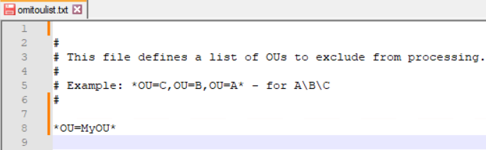
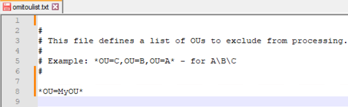

After excluding some OUs from the scope by modifying the omitoulist.txt file, you may notice
that PEN has stopped showing any results for any monitoring plans, even after reverting
changes back.
A possible cause is blank lines accidentally added at the beginning, in the middle, or at the end of the the omitoulist.txt file. In order to fix that, open the file in any text editor and remove the blank lines. On the screenshot below, the lines 1, 7 and 9 must be removed.

A possible cause is blank lines accidentally added at the beginning, in the middle, or at the end of the the omitoulist.txt file. In order to fix that, open the file in any text editor and remove the blank lines. On the screenshot below, the lines 1, 7 and 9 must be removed.
